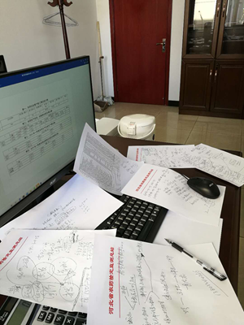

日记： 2020年，我的这一天
（2月16日. 星期日．北风．晴）
春节以来，城市封锁，社区封闭，交通管制，人们的生活好像一夜间就被彻底打乱了，网络、微信上几乎全是新冠肺炎的各种消息，突发疫情造成的紧张气氛有些让人焦虑、压抑、无所适从……
早8：00
手机天气显示—6℃，迎着寒冷的北风出门，手和脖子不自觉地就往棉衣里缩。节后疫情防控陡然升级，各个社区普遍限制居民外出。可是上周开始，农业部和本省对抗疫保供实行日调度，我们每天都需要准时上报农药企业复工复产的最新情况，这活儿只呆在家里是干不成的，该出去还是要出去的。说明情况、测量体温、经过允许后出小区……

平常车水马龙的街道现在变得异常冷清，只身行走在空旷的马路上让人倍感凄凉，从家到单位3里多路只碰见了1辆空驶的公交和1位弯腰蹬三轮的环卫工人。“枯藤老树昏鸦……古道西风瘦马……”，古诗中描绘的凄凉景象投射到现代的都市里，恐怕百年也难遇一次。
上午8：30
这段时间各单位都在实行“居家办公”，平日里轮流值守人员不多，周末就越发清静了。门卫刘师傅给测了体温登了记，从后院进办公室。昨天晚上十点多赵站长打电话说是有个日报数据需要修正一下，那就先从整理报表开始吧，随后再调度企业开工的事。有了前几天采集全省信息的经验，估计中午十二点前完成今天的日报任务是不成问题的。打开电脑，泡点茶，开始工作……
上午10：00
一楼后门“咣当”一声打破了大楼的寂静，赵站长也来单位了，见我正在加班便笑了笑说“这么早就过来啦，一看就是干活的命啊！”。原来站长刚接到任务，近期，为了减少疫情对社会经济的冲击，各级政府、部门都把复工复产列为了重点工作，明天有个政府常务会，需要我们提供全省农药行业最新的运行情况。呵呵，看来今天还真的来着了，这段时间“复产保供”正是自己牵头负责的工作，那就抓紧干吧。先是按照领导和农药处的要求，半个小时设计出调查提纲和统计样表，然后电话安排我们复产保供组少军、东晓核实经营单位库存情况，请求农药协会帮忙采集生产环节数据。由于涉及近140家生产企业，工作量大是可想而知的，加上报送材料时间要求又紧，赵郁强站长也亲自上阵了，我们一起发微信、下任务，打电话、摸情况，找资料、滤信息，查档案、搞对照，筛数据、填表格，做分析、写报告，节奏相当的紧张，没多大一会儿记录用的稿纸就堆满办公桌了。为了赶进度，我和站长碰情况对数据在楼道里常常是一溜小跑，调度过程中上边随时来了新任务或下边有了新情况，我们干脆就打开微信放语音一起听共同看，集中梳理快速领会，统一看法后迅速行动。“多少事，从来急，天地转，光阴迫……”，看来短时间内保质保量完成工作任务没点争分夺秒的劲儿还是真不行的。

在平时，药情统计是再“平淡”不过的工作，而疫情爆发后却突然成了各方关注的焦点。我们除了常规收集各类数据信息外，还要调查春耕生产亟需用药的库存和缺口情况，分析疫情给农药生产供应带来的影响，向有关部门反映企业开工面临的困难，顺便协助解决一些复工复产方面遇到的问题，很多事情已经超出了我们日常的工作范畴。但是，在这特殊时期就不能讲那么多了，眼下疫情防控和恢复生产是头等大事，我们必须想尽一切办法，确保春耕备耕用药供应，调动本系统、本行业一切可以动员的力量，力所能及地帮助农药企业尽快摆脱当前的困境。中央常说全国抗疫是对执政能力的一场大考，对我们来讲，当下的复工复产又何尝不是对农药管理工作的一次大考呢……
时间在紧张的忙碌中一点一点过去了，手头工作也一项一项有了眉目。整理了一下“战果”，总共完成了部里的《农药生产调度日报表》，厅的《农药企业复工复产日报表》、《全省分市农药企业复工复产情况表》、《我省农药生产经营复工复产现状及面临主要问题的情况报告》，还有农药处要的《农药企业复产复工情况统计表》、《农药生产企业经营单位库存情况表》、《已复产农药生产企业生产农药品种调查表》，另外还有自己用于对照分析整理的《一季度农药生产企业生产情况表》、《一季度农药经营单位进货销售情况表》，共8套表格，1个报告。这些平常看上去单调乏味冷冰冰的一堆数据，现在摆在面前却像是一个个疫情中挣扎企业的呼唤，里面既有交通物流的断点，又有返岗人流的堵点，也有复工复产的难点，把它们整合分析提炼，就会形成领导决策的参考依据，政府部门就有可能从中找到破解疫情困扰恢复农药生产的钥匙。赶紧发邮件、发微信，在规定的时间里把数据信息和分析报告报了出去。
从今天信息调度的情况看，农药企业复工复产面临的形势还是很严峻的，工人返不了岗，原材料供应不上，上下游产业链几近中断，在疫情防控空前严格的情况下恢复正常生产还是有相当难度的，这也正是我们下阶段复产保供所必须面对和解决的难点问题。今天的任务总算告一段落了，这个时候看了看时间，哦，已经快下午三点啦。忙活得还真有点头昏脑胀了，我和站长午饭都还没来得及吃，饿得也够呛了，整理整理，收拾收拾，撤退吧。捂着饥肠辘辘的肚子，迎着寒风，幻想着热乎乎即将到口的“午餐”，不由得加快了回家的脚步……
下午15：00
还没到家门口，手机铃响了，一看是上瑞公司张总打来的，哦，光顾着忙活复工调度的事，差点把上周答应参加公益行动的事情给忘了，承诺的事怎好变卦呢，那就别回家了，干脆，也别吃饭了，接着去忙上瑞公司的事吧。
上瑞公司响应我们单位发起的全省农药行业“抗疫情、献爱心”倡议，启动了向百家社区捐赠防疫物资的公益行动。受疫情影响，公司返岗的人不多，加上有员工担心被疫情传染，参加公益行动的人就更少了。为了支持上瑞公司对我们倡议的响应，自己得知他们的难处后，就欣然答应参加这个行动，成了上瑞公司志愿服务队的一员，工作之余帮着下社区捐赠防疫物资。
今天约好的是去裕华片区捐赠消毒液。联络，装车，接洽，送货，我们一个社区一个社区地转，送下捐赠物资，教会物业人员消毒液的配制和使用方法，完成一个社区，接着再辗转下一个社区。北风越刮越大，天气越来越冷，不过，急急忙忙跑跑颠颠的，倒也很充实，先前饥肠辘辘的劲竟然慢慢地给熬过去了……
由于我们与社区负责人从未谋面，各个小区又都封闭管理，电话联络、现场接洽并不是想象中的那么顺畅，这时张总就向他们介绍说我是省农业厅药检所的，也许“国家工作人员”身份增添了可信度，双方沟通立马也就变得容易起来。国际城、东方观邸、国仕山……我们先后走了7个社区，4个小区完成了捐赠任务，3个小区约定明天由居委会出面再继续接洽。时间可真快，转眼间2个多小时便过去了。
即使今天的捐赠任务还没完成，我也不能再和企业继续行动了，因为我还有社区防疫执勤任务，这事更耽搁不得。告别张总一行，返回自己居住的小区……
下午17：30
疫情发生以来，我主动参与社区疫情防控，成了一名在职党员志愿者。因为这段时间每天要在单位处理复产调度的事，居委会就安排我周六周日或平常人流高峰时段执勤，负责测量体温、疏导车辆、劝返人员等工作。今天我是下午五点半到晚上八点的班，与居委会、小区保安、区统计局“下沉”人员一个组，一班共有四个人。
对于防疫检查，大部分居民还是挺配合的，但也有个别的被约束后不习惯，尤其遇到人多拥堵的时候，短不了耍性子给执勤人员脸色。我们对此也有思想准备，耐下心来向他们解释，动之以情晓之以理，攀谈的时候他们得知我不是上级派来“管”他们的而是自己的邻居时，情绪也就缓和了许多，“志愿者”角色在这个时候就成社区管理的润滑剂，时间长了大家配合检查也就主动多了，有的甚至还表示要和我一样加入志愿者队伍站岗执勤。见到这些变化，看到自己的行为无形当中还对别人产生了影响，内心还是挺知足挺欣慰的。为了减少检查点的拥堵加快人员流动，我前几天还特意制作了一个简易三脚架，贴上小区二维码摆放到检查点显眼位置，方便了后边排队人员提前扫码登记，减少了大家等候的时间，提高了通行效率，也减少了一些不必要的矛盾和摩擦。
今天虽然是礼拜天，可上边照常检查防疫工作。先后来了两拨人，头一拨像是领导，3个人，先是在远处观察了我们这边的值守情况，然后又过来向我询问“下沉”人员是不是在岗，存在什么问题等等，都一一做了记录，他们看到我佩戴的志愿者标志时，还特地向我表示了感谢。第二拨来了2个人，主要检查出入登记名册的情况，前几天有几条信息填的不够规范，人家现场就提出了标准要求，看来各级对防疫工作都是相当的负责没人懈怠。
说实话，自己参加社区防疫，家人还是有一些顾虑的。我们这个小区有去海南等地度假的，有往湖北探亲的，有援鄂同志家属，还有不少外来租客，人员成分复杂，疫情防控压力大。我执勤排班大都是人流高峰时段，人多事杂，加上疫情传染的不确定性，风险自然会大很多。所以我就在自我防护上下了功夫，执勤时戴上爱人特意给准备的“好”口罩，戴好一次性手套，给出入人员测量体温时尽量伸长胳膊始终保持安全距离，我们几个值班的也都提前分好工避免扎堆，尽量减少近距离接触的机会。即使这样，遇到一个体温稍高一点的，大家还是会立刻紧张起来，必须重新核实人员身份，详细询问行踪轨迹，要求当事人在监测点停留观察并二次测温。还好，到现在为止还没遇到超过37.2度的情况，现场测温偏高的，很可能是车内空调高温直吹或者我们测温枪使用方法问题造成的，重新测量体温正常了，大家也就都松了口气。
也许是下午跑着捐赠物资时出了些汗，太阳落山后贴身的棉衣开始变得冰凉冰凉，时不时就冻得打个冷颤，尤其晚上七点过后，整个人几乎就要冻僵了。不过我们几个值班的都挺自觉，不管天气啥状况，不到换班时间谁也不随便脱岗。一个班下来，我们对每个出入小区的人都要详细查验出入证件、询问健康状况、测量体温、监督登记、记录可疑情况、准入、放行……如此循环往复直到下一班的到来……今天总共盘查了多少人早就记不清了，只记得一共劝返了7位想外出的“无证”居民，有4个外来人员被拒之门外，另外我们还替小区住户临时代收了5件快递包裹和1份外卖……我们都知道，社区是防控疫情的第一道防线，它不单单关系居民的健康安全，也事关整个社会疫情防控的成败，检查过程来不得丝毫马虎。大家长时间保持高度紧张的状态，不管是谁一个班下来都会很累很疲劳，加上今天自己一直没吃饭，后半程感觉就更难熬了，要是没有点责任感和精神上的支撑，身体还真的会吃不消。每到这时，心中就迫切期盼这波疫情赶紧过去，早点还大家健康，早点让人们恢复自由，也让一线抗疫人员、基层社区同志和我们这些志愿者不再如此辛苦……
晚上20：00
到了换岗时间了，接班的人也到了。从早起加班调度复工复产到给社区运送捐赠物资再到小区防疫执勤，连续忙活了12个多小时，中间没有停歇，长时间不能喝一口水，没吃一口饭，还好，现在任务终于结束了，终于可以，回家了……
这，就是我的一天，似水流年中可以慰籍心境沉淀岁月的一天，这就是我的2020，我的2月16日。
（后记：自己并没有写日记的习惯，后来在“在职党员微信群”中看到社区潘书记发的这条消息后，忽然想起在疫情防控最为吃紧的阶段，在社会最需要有人站出来的时候，自己还曾经历过这样的一天，这时光值得把它留下来，值得回忆，于是就试着写了写，算是个纪念吧。午夜随笔，阚清松）
|
|
||||||||